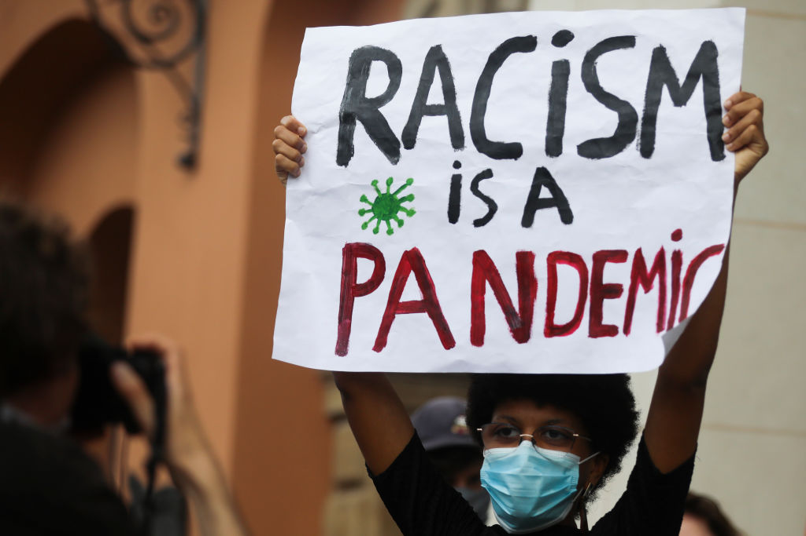

Public Health
Racism: A Public Health Crisis We Can No Longer Ignore
Amira Rady - Fall 2020

Beata Zawrzel—NurPhoto/Getty Images
Our broken healthcare system only propagates the deep-rooted social issues such as discrimination, and lack of access to quality care; perhaps it is time to look at these social issues from a new perspective. Just as discrimination, income, education, and other social factors determine outcomes in daily life, these factors also determine health outcomes. Thus, to deny that racism and inequality are a public health crisis is to turn a blind eye to the injustices within our own country.
At the heart of public health, is a commitment to the health of an entire population regardless of whether it is big or small. Just within the scope of Covid-19, we can see that minority communities are disproportionately affected by illness. However, this is not a new occurrence; the systemic and social inequities in the world of public health have left minorities at a significantly higher risk of illness and death, whether it be brought on by Covid-19, wealth distribution, or lack of access to healthcare. As eloquently put by Steven Brill, author of America’s Bitter Pill, “When you’re staring up at someone from the gurney...You have no power. Only hope.” This hope is what makes us so vulnerable to a systemically broken healthcare system. This system is disproportionately failing people of color, and it’s too late for us to do anything about it once patients are on a gurney.
The numbers do not lie. We see the statistics right here before us. This virus is disproportionately impacting people of color, yet, we are not making enough efforts to understand why.
We already fear for our lives at school, in the street, even in our own homes. On the gurney, we can’t help but give in to the same fear of a system that has already hurt us so deeply. Public health is not living up to its goals. How can we commit to the health of an entire population when we do not take into account the racial discrimination and social barriers that significantly increase the odds of minorities ending up in this position in the first place? It is hard to see this problem, and once we do, it is often too late. In the world we live in, being a minority has become a preexisting condition. We need to open our eyes and see this for what it is: a public health crisis. We need to stop being reactive. We need to take care of these patients before they end up in the hospital.
George Floyd. Breonna Taylor. Michael Rivera. Yassin Mohamed. Ahmaud Arbery. The list seems endless, but the very least we can do is to keep saying their names. While our world struggles through this pandemic, minorities are forced to cope with another pandemic on top of it: a pandemic forged within our own nation, a system that enables police brutality, racism, and xenophobia. Much like deaths caused by Covid-19, these violent deaths of innocent people of color have become routine. These are the cruel and brutal acts we witness on body camera footage or the phone recordings of shaken bystanders, but what about all the victims we do not see? We not only grieve for these brothers and sisters but those who we have lost to the invisible barriers; our hearts ache for the hidden victims, the long list of those who have suffered under a broken healthcare system. These losses are becoming just as routine; yet, we rarely see the health needs of these communities being met.
This not only plagues our communities with physical illnesses but leaves us much more at risk of developing mental illnesses. Our own nation’s history reveals a deep-rooted fear of our bodies; this oppression and the ongoing struggle to simply exist in a world that fears us is the root of so much psychological trauma that has become a reality for us people of color. This constant struggle, this fear for our lives, this never-ending case of imposter syndrome are risk factors for physical and mental health disorders. Meanwhile, poor access to care in our communities, a lack of physicians practicing with cultural competency, and other invisible barriers make it increasingly difficult to meet our holistic health needs. We live in a western world of medicine that still attempts to treat us under a eurocentric attitude, in favor of medical solutions that are not always the solutions for us. If we can not say these names, if we can not even open dialogues about how these attitudes have become ingrained in our healthcare system, how will we ever address these barriers?
Our world will not survive this pandemic by being reactive. We raced all over the globe to develop a Covid-19 vaccine in just a few months; meanwhile, racism has plagued our world for significantly longer, but we have not seen nearly the same initiative taken to countering it. The development of a vaccine was very much reactive, but the manmade pandemic of racism can not simply be addressed in the same manner. This is a pandemic on a pandemic; addressing the social determinants of health such as education, healthcare access, and discrimination and bias is crucial to truly be active advocates for the health of the entire public. These pandemics are not separate; they are so complexly intertwined. The Covid-19 pandemic is truly a manifestation of racial discrimination and implicit bias within the healthcare system; the intangible so deeply rooted within the tangible that we only see the tip of this iceberg.
This pandemic is a call to action, a chance for systemic reform that we must answer; like the virus, racism will not just go away. Legal, healthcare, and other social institutions have for too long placed lives of color at a lower value. To deny this would be to deny our own past. We only discovered this virus in 2019 and the progress we have made in learning about how to treat and prevent it is incredible. We have made much progress in understanding the virus, but we have been living in denial, failing generation after generation to address this pandemic of racism. Fire is burning; whether others hear our cries and will join us or not will determine how we will learn from this pandemic and how we will heal these deep-rooted, historical wounds. I am a woman of color, I have lived through these struggles and I know that we can not do this alone; we need our allies to stand with us. We can not erase our past, but we can write ourselves a new story; this is our story to tell. We can wear our masks and we can wash our hands, but we can’t keep grieving and struggling at the hands of an inequitable healthcare system and society. Just as we mask up, social distance, and clean our hands to prevent Covid-19 infection, we have to be proactive in this fight. By understanding and countering these health disparities, we can largely improve the health of communities of color while also addressing the manmade pandemic at hand. Our country has fed on injustice for too long; now there can be no peace without justice.
References:
COVID-19 Hospitalization and Death by Race/Ethnicity. (n.d.). Retrieved January 24, 2021, from https://www.cdc.gov/coronavirus/2019-ncov/covid-data/investigations-discovery/hospitalization-death-by-race-ethnicity.html
About the Author:
My name is Amira Rady and I am a proud woman of color. My aim with this piece is to create a call to action. Now you may be wondering how you can take up this call. If you want to know how you can join this fight for justice or even if you just want to talk about how all this makes you feel, please reach out to me. I am always open to having these conversations; my email is arady1@jhu.edu. Additionally, I have included a list of just a few available resources here to educate yourself and learn more about how you can help!
- Resources to learn about strategies to combat racism in healthcare and beyond from the AAMC - Racism and Health
- Anti-Racism resources, reading lists, articles, webinars, and more - Anti-Racism Resources for Healthcare Professionals
- Health equity resources and education from APHA - APHA - Racism and Health
- The University of Washington’s Race and Equity Initiative - Anti-Racism resources | Race & Equity Initiative